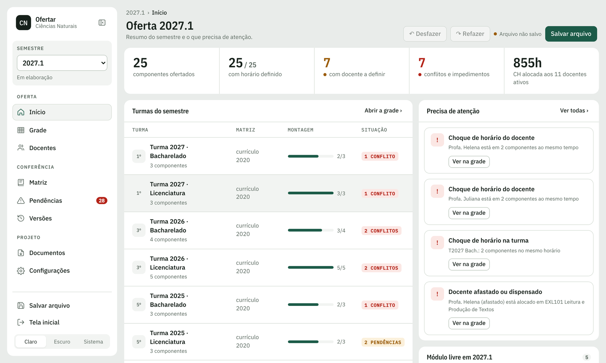
As telas deste manual usam o curso de exemplo que vem no aplicativo (um curso fictício de Ciências Naturais). Nomes de docentes e componentes são inventados.
Uma ferramenta para a coordenação montar a oferta de disciplinas do semestre em um lugar só, com conferência automática e documentos prontos.
Na prática, a oferta costuma ser montada em um documento de texto com uma tabela por turma. A mesma informação é depois redigitada na tabela de carga horária docente, no quadro de componentes “a definir”, no memorando aos outros colegiados, no quadro enviado ao Departamento e em cada versão (prévia, discentes, docentes, final). Com isso, é fácil um docente aparecer em duas turmas no mesmo horário, a carga horária não bater com a grade ou uma obrigatória ficar de fora.
No Ofertar existe uma base só: você monta a grade e o resto é calculado a partir dela.
| Você faz | O Ofertar calcula e confere |
|---|---|
| Monta a grade de cada turma, clicando nos horários | Choques de horário de docentes e de turmas; aulas por semana compatíveis com a carga horária |
| Indica o docente de cada componente | Carga horária de cada docente, comparada com a prevista (PAID) e com o mínimo de ensino |
| Cadastra as matrizes curriculares | Obrigatórias de cada período que ficaram fora da oferta; códigos que não existem na matriz da turma |
| Guarda versões quando envia a oferta | O que mudou entre uma versão e outra |
| Clica em “Baixar” | Documentos em Word para discentes, docentes e Departamento, planilha de carga horária e rascunho de memorando |
Use pelo endereço na internet ou instale como aplicativo no computador.
Abra https://ofertar-cyan.vercel.app no Chrome ou no Edge. O aplicativo carrega e já pode ser usado. Depois da primeira abertura, funciona também sem internet.
O aplicativo instalado se atualiza sozinho quando há versão nova: basta fechar e abrir.
Também é possível usar o arquivo app/index.html do repositório: baixe e abra com duplo clique. Funciona igual, mas não se atualiza sozinho.
.json uma vez pelo botão “Abrir arquivo de projeto”.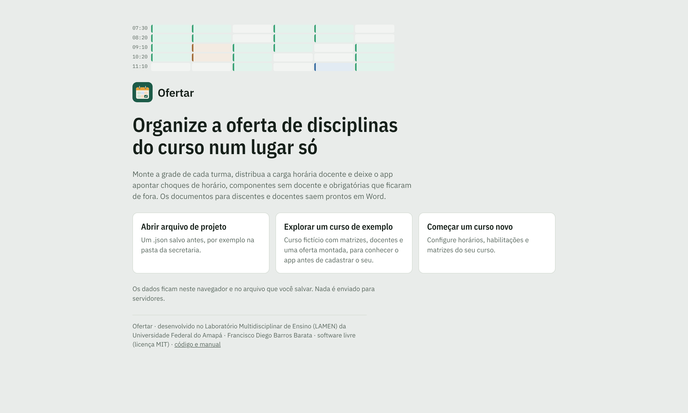
Na tela de abertura há três caminhos:
.json salvo antes, por exemplo na pasta da secretaria no OneDrive ou Google Drive..json: é a cópia de segurança e o que outra pessoa abre para continuar o trabalho. Use Salvar arquivo (ou Ctrl+S). No Chrome e no Edge, depois do primeiro salvamento, o aplicativo grava direto no mesmo arquivo.O indicador no topo mostra a situação: “Guardado no navegador” ou “Arquivo não salvo” quando há alterações ainda não gravadas no .json.
Desfazer e Refazer (Ctrl+Z / Ctrl+Y) valem para qualquer alteração.
O menu lateral leva às telas: Início, Grade, Docentes, Matriz, Pendências, Versões, Documentos e Configurações. O seletor Semestre fica no topo do menu. O botão ao lado do nome recolhe o menu para dar espaço ao quadro. Tela inicial volta à abertura sem perder o projeto, que pode ser retomado em “Continuar o projeto aberto”. O tema claro ou escuro é escolhido no rodapé do menu.
Tudo o que muda de um curso para outro fica em Configurações. Faça isso uma vez; depois só ajuste.
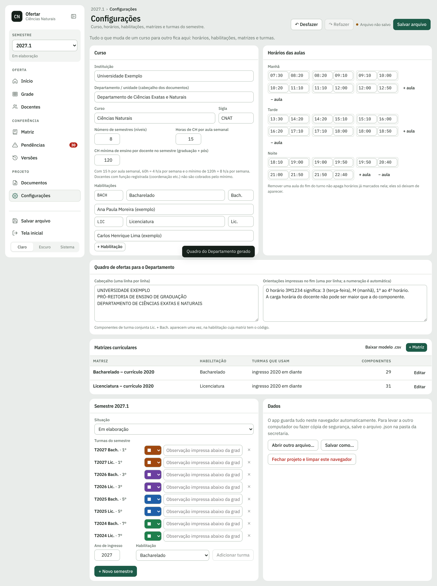
| Item | O que informar |
|---|---|
| Curso | Instituição, departamento (sai no cabeçalho dos documentos), nome do curso e sigla. |
| Habilitações | Bacharelado, Licenciatura ou uma única, com o nome do coordenador ou coordenadora de cada uma. |
| Número de semestres | Quantos períodos tem o curso (ex.: 8). |
| Horas por aula semanal | Com 15, um componente de 60h precisa de 4 aulas por semana. |
| CH mínima de ensino | Mínimo de ensino por docente no semestre (graduação + pós), por exemplo 120h. |
| Horários das aulas | Início e fim de cada aula da manhã, tarde e noite. |
| Quadro do Departamento | Cabeçalho e orientações do quadro de ofertas enviado ao Departamento. |
| Turmas do semestre | Turmas por ano de ingresso, cor do quadro de cada ano e observação impressa abaixo da grade. |
Cada matriz vale para um intervalo de anos de ingresso (ex.: currículo 2015 até a turma 2024; currículo 2025 a partir da turma 2025). O aplicativo escolhe sozinho a matriz de cada turma.
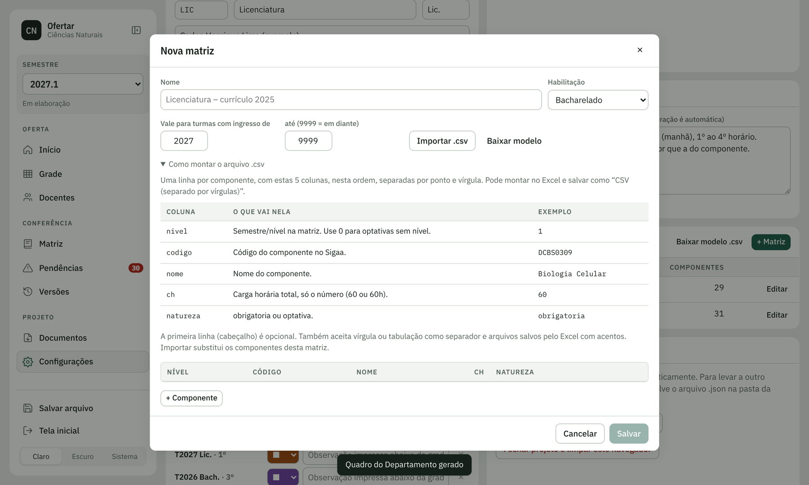
nivel; codigo; nome; ch; natureza) e salve como CSV.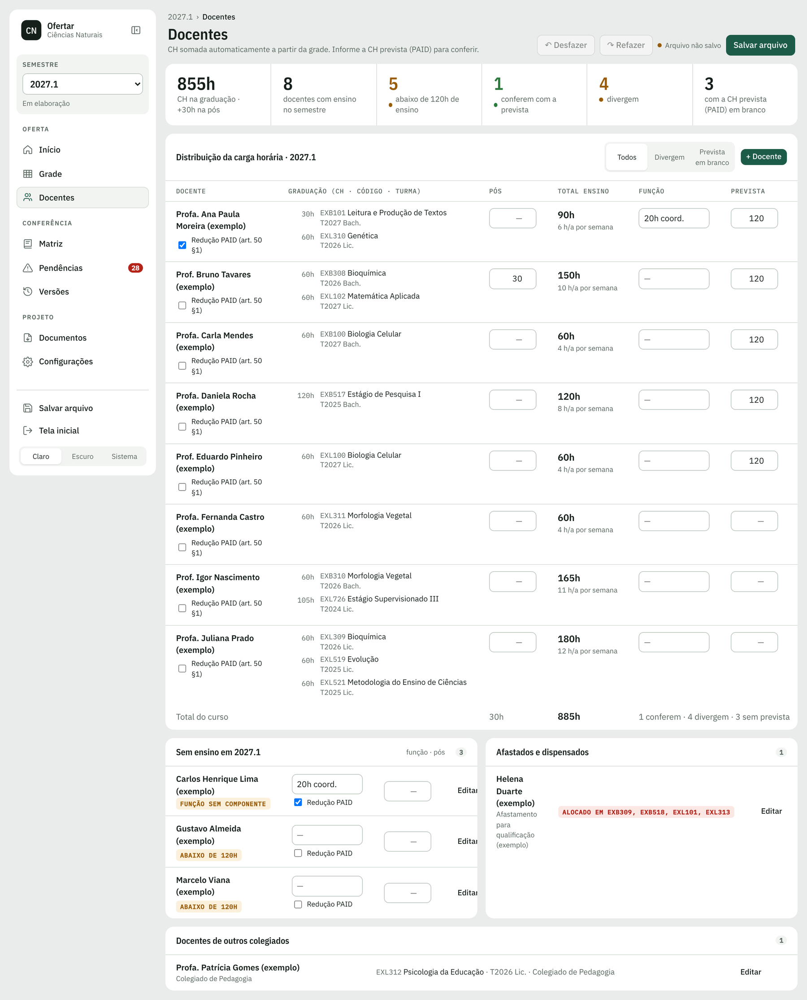
Use + Docente para cadastrar: nome completo, nome curto (o que aparece na grade), tratamento (Prof./Profa.), vínculo (do curso ou de outro colegiado) e situação (ativo, afastado ou dispensado do ensino). Docentes também podem ser cadastrados na hora, dentro de um componente.
A tabela mostra, para cada docente:
Abaixo da tabela ficam os docentes sem ensino no semestre, os afastados e dispensados e os docentes de outros colegiados. Horário mostra a semana do docente em todas as turmas.
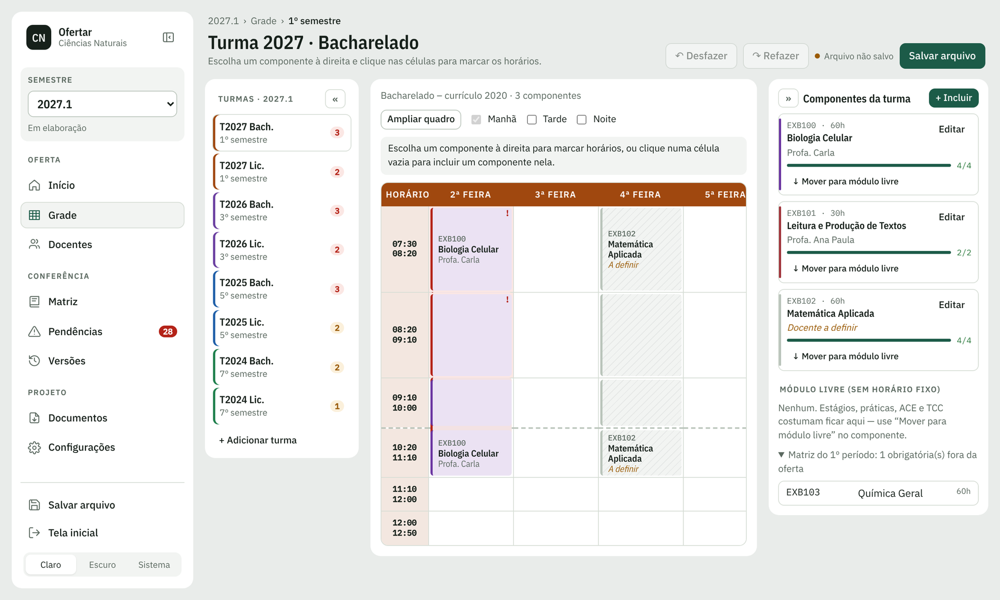
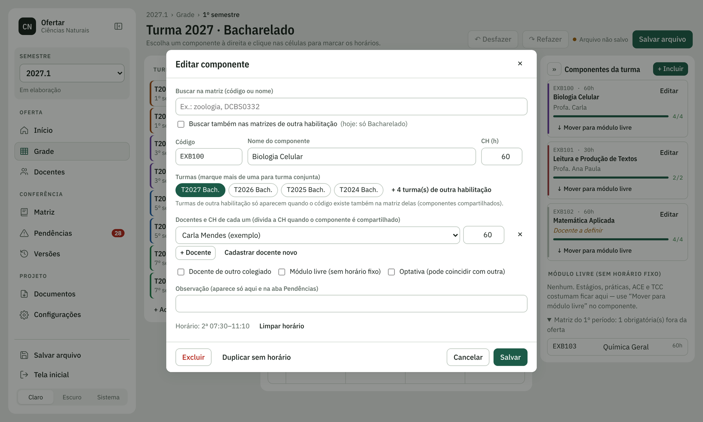
Clique no componente no painel da direita: o quadro passa ao modo de marcação. Clique nas células para marcar ou desmarcar. A barra mostra quantas aulas por semana já foram marcadas e quantas a CH pede. Termine com Concluir ou Esc.
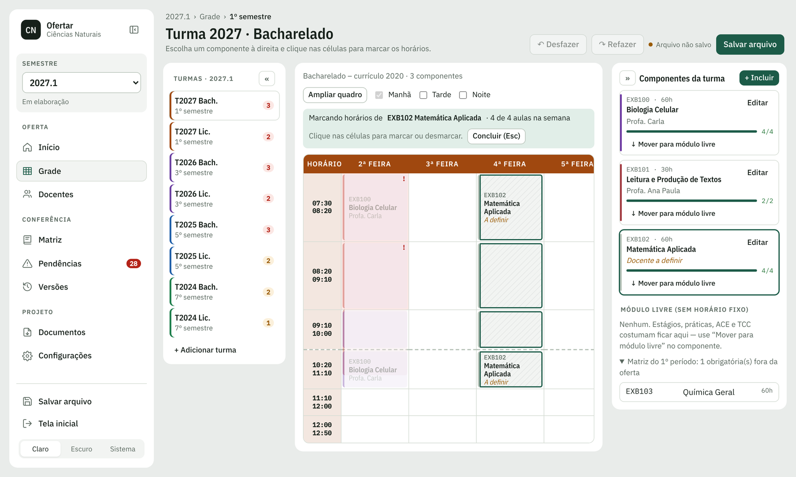
| Situação | Como fazer |
|---|---|
| A mesma disciplina para duas turmas, no mesmo horário e com o mesmo docente | No componente, marque as duas turmas. Ele aparece nos dois quadros e a CH conta uma vez para o docente. |
| Mais de um docente no componente | Em Docentes, adicione cada um e divida a CH (ex.: 60h + 45h). |
| Estágio, prática, ACE, TCC | Mover para módulo livre: o componente fica sem horário fixo e sai como “Módulo livre” nos documentos. |
| Docente de outro colegiado | Marque Docente de outro colegiado e informe qual. O componente entra no memorando. |
| Optativas no mesmo horário | Marque Optativa: optativas podem coincidir sem gerar choque. |
| Turno da noite | Marque Noite acima do quadro. Qualquer turno pode ser escondido; se tiver aulas, aparece o aviso “aulas ocultas”. |
| Turma que não está na lista | + Adicionar turma, no fim da lista de turmas. |
Ampliar quadro recolhe os dois painéis laterais. Junto com o menu recolhido, a semana inteira cabe em telas menores.
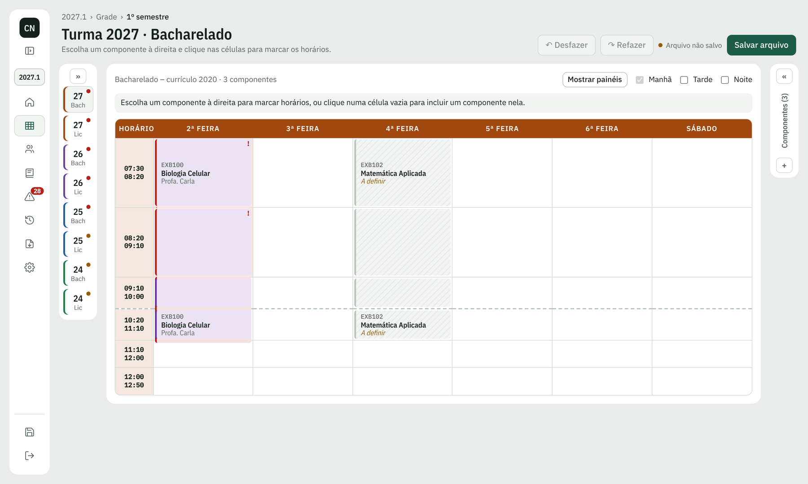
O Ofertar confere a oferta enquanto você trabalha.
Resume o semestre: componentes ofertados, com horário, sem docente, conflitos e carga horária total. Mostra a montagem de cada turma, os itens que precisam de atenção e os componentes em módulo livre.
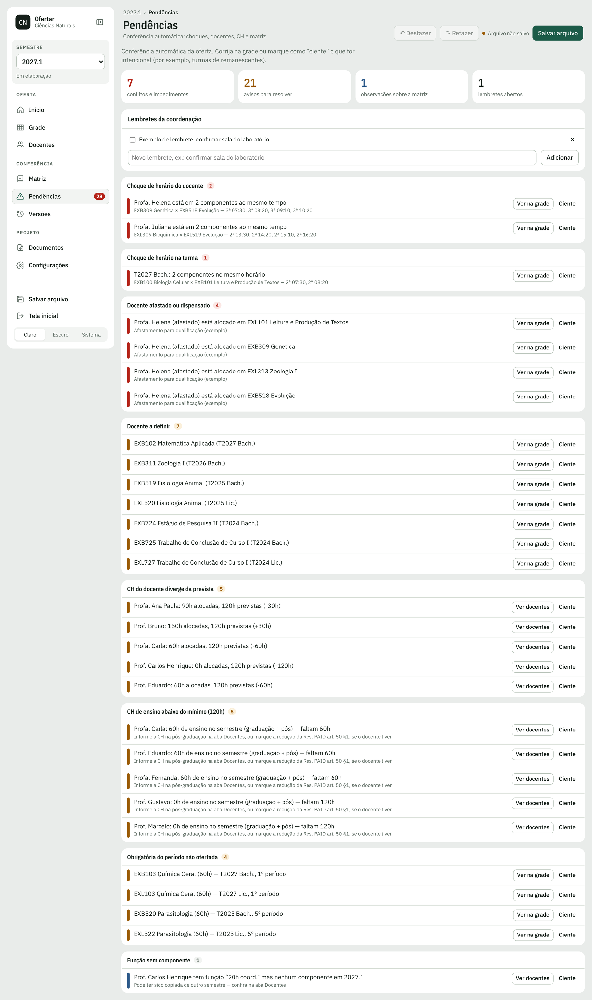
| Verificação | Gravidade |
|---|---|
| Choque de horário do docente ou da turma | Erro |
| Docente afastado ou dispensado alocado | Erro |
| CH do docente maior que a do componente (regra do Sigaa) | Erro |
| Aulas por semana diferentes do que a CH pede | Aviso |
| Componente sem docente | Aviso |
| CH do docente diferente da prevista ou abaixo do mínimo de ensino | Aviso |
| Obrigatória do período fora da oferta | Aviso |
| Código fora da matriz da turma; função sem componente | Observação |
O que for intencional (por exemplo, turma de remanescentes) pode ser marcado como Ciente. Há também uma lista de lembretes da coordenação.
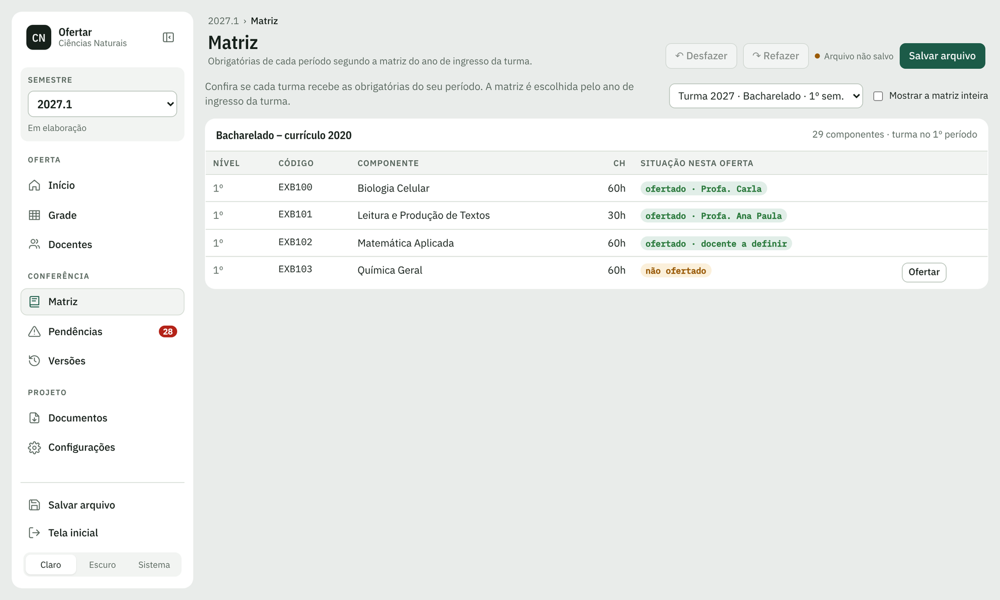
Guarde uma versão sempre que enviar a oferta (prévia ao colegiado, versão aos discentes, final). Depois, Comparar com a atual lista exatamente o que mudou: componentes incluídos ou removidos, horários, docentes, CH e turmas. A lista pode ser copiada para avisar discentes e docentes. Restaurar volta a oferta para uma versão anterior.
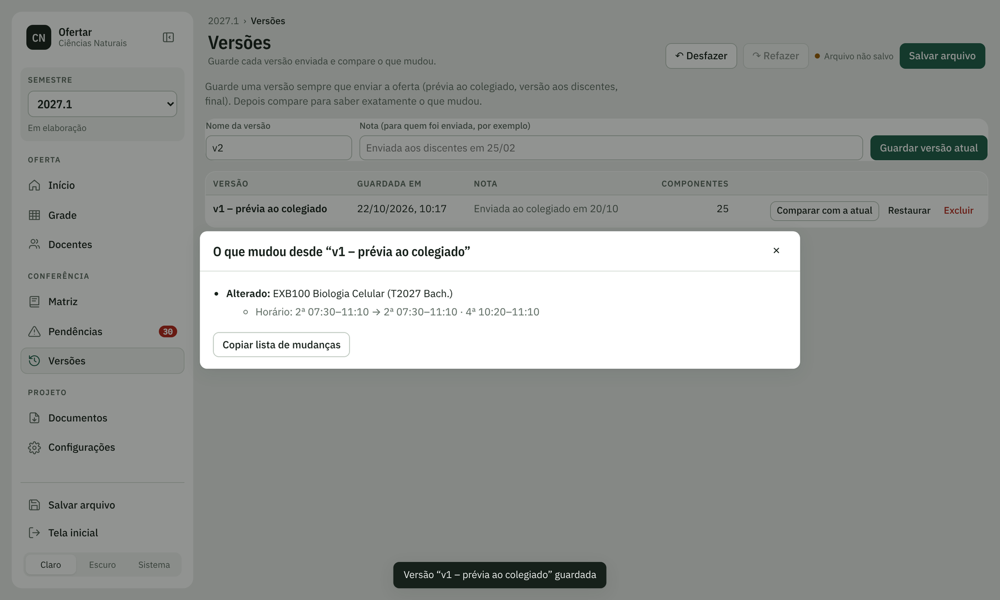
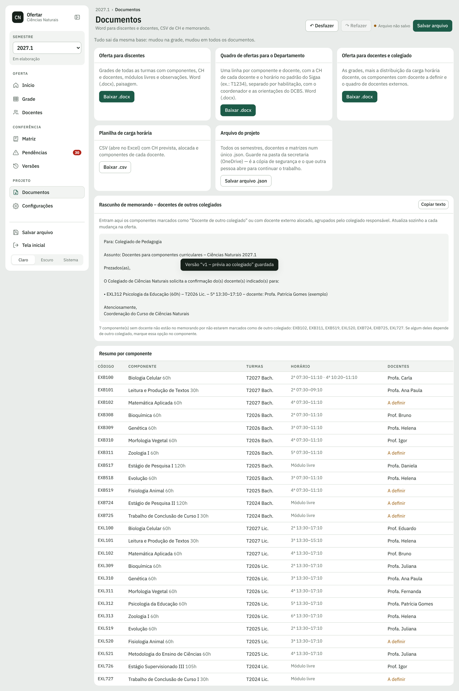
| Documento | Conteúdo |
|---|---|
| Oferta para discentes (.docx) | Quadro de horários de cada turma, com a cor do ano de ingresso, módulos livres e observações. |
| Oferta para docentes (.docx) | Os quadros, mais a distribuição da carga horária docente, componentes a definir e docentes externos. |
| Quadro para o Departamento (.docx) | Uma linha por componente e docente, com a CH do docente e o horário no padrão do Sigaa (ex.: T1234), por habilitação, com coordenador e orientações. |
| Planilha de carga horária (.csv) | CH prevista e alocada de cada docente, para abrir no Excel. |
| Rascunho de memorando | Texto por colegiado, pedindo indicação ou confirmação de docentes de outros colegiados. Atualiza a cada mudança na oferta. |
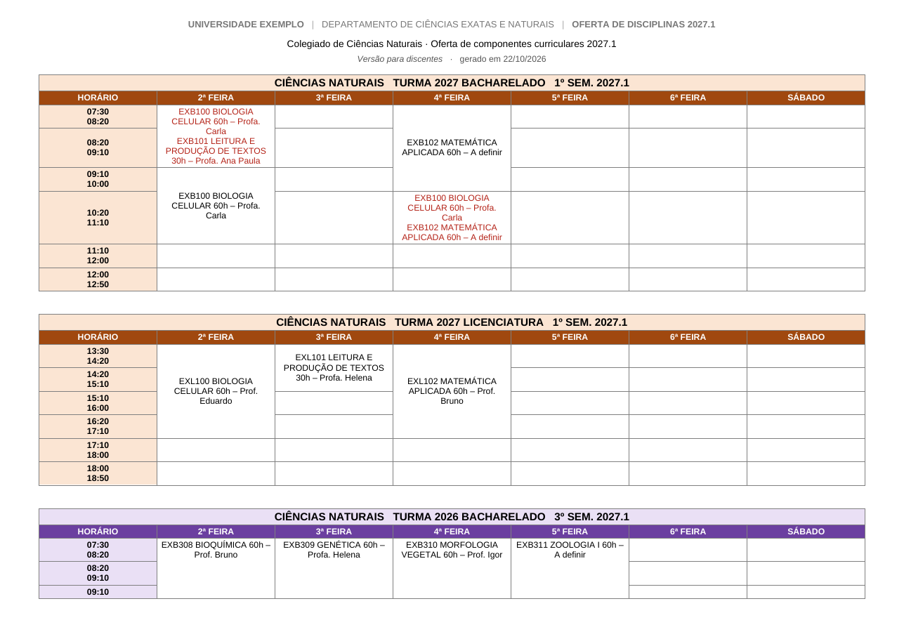
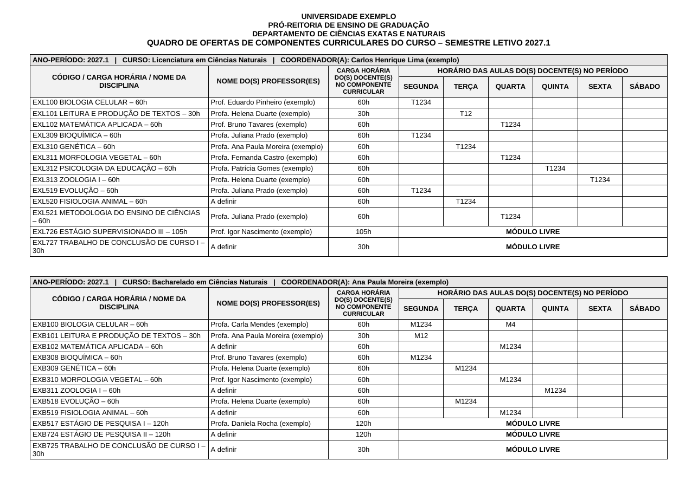
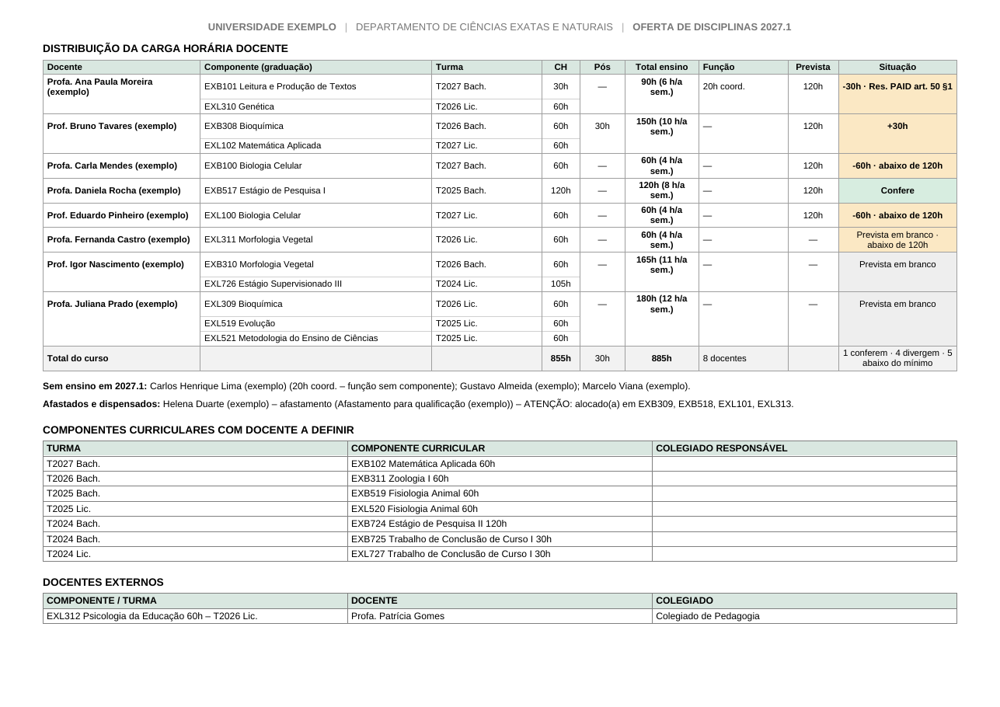
2027.2).Ao reaproveitar, cada componente vai para a turma que estará naquele período no novo semestre, com os mesmos horários e docentes. Depois, só ajuste o que mudou. As turmas de cada habilitação e período são criadas automaticamente.
.json numa pasta compartilhada da secretaria (OneDrive, Google Drive). Ele é a cópia de segurança.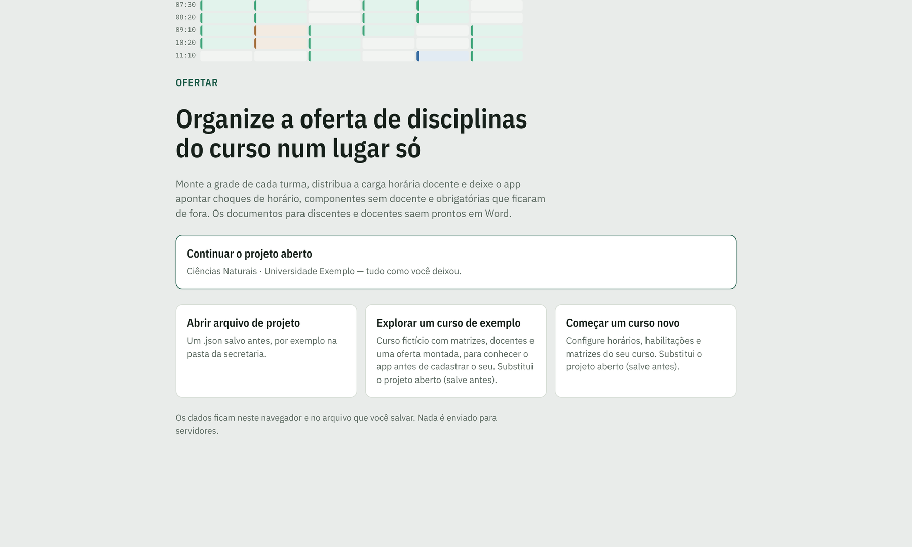
Não. O endereço na internet apenas entrega o aplicativo. A oferta fica no seu navegador e no arquivo que você salvar.
Cada computador e navegador tem a sua cópia. Use Abrir arquivo de projeto e escolha o .json salvo.
O Ofertar reconhece os arquivos CSV salvos pelo Excel. Se ainda assim houver problema, salve como “CSV UTF-8” no Excel e importe de novo.
O memorando reúne só os componentes marcados como Docente de outro colegiado ou com docente externo alocado. Os demais sem docente aparecem num aviso abaixo do memorando.
Não. Ela entra uma vez, na habilitação cuja matriz tem o código, para evitar duplicidade no Sigaa.
Sim. Comece um curso novo e cadastre as suas configurações, matrizes e docentes. O código é livre (licença MIT).
Ofertar foi desenvolvido no Laboratório Multidisciplinar de Ensino (LAMEN) da Universidade Federal do Amapá (UNIFAP), a partir da rotina de organização das ofertas de disciplinas da coordenação de curso.
Autor: Francisco Diego Barros Barata · ORCID 0000-0002-1640-5630 · Lattes lattes.cnpq.br/1702223554115381
Licença: MIT. É permitido usar, copiar, modificar e redistribuir, mantendo o aviso de direitos autorais.
Código-fonte e documentação: https://github.com/baratadiego/ofertar
BARATA, Francisco Diego Barros. Ofertar: organizador de ofertas de disciplinas para coordenações de curso. Versão 1.0.0. Macapá: Laboratório Multidisciplinar de Ensino (LAMEN), Universidade Federal do Amapá, 2026. Software. Disponível em: https://github.com/baratadiego/ofertar.
Com o arquivamento no Zenodo, use o DOI indicado na página do repositório.